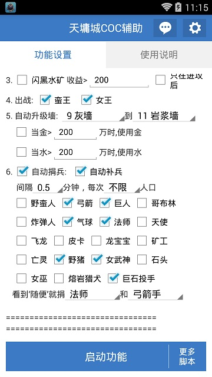
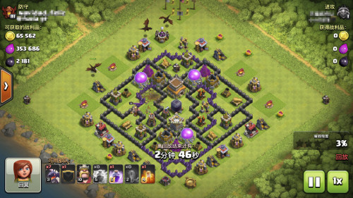
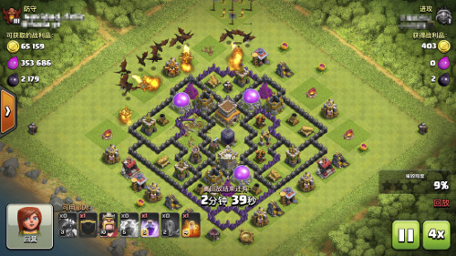
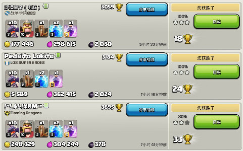
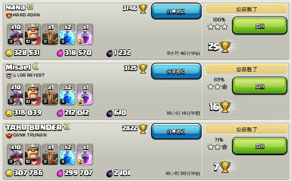

| 日期 | 2017/10/5 |
| 安装包 | 天墉城COC辅助2017-01-01_225737.apk |
| 更新摘要 | 开源了 |
开源
国庆快乐。
这个辅助大约是从去年9月份开始，作为一个上班的人，并没有太多时间。我前后花了两个多月做出了第一个版本，然后接下来的几个月里又陆陆续续的加了几个大的功能，变成了一个功能基本齐全的辅助。
目前的功能包括: 自动采集，自动造兵，自动进攻，自动要兵，自动捐兵，自动升级城墙。自动进攻又包括屌丝，弓法蛮，偷黑和八本龙流冲杯几种，闪黑下王开技能都有。捐兵是可以智能识别请求的，按需捐兵，而且是全兵种按需求捐。就捐兵这点，应该比大多数的辅助都要强。打钱打黑的效率也是杠杠的，有图为证。我自己四个号，八本到十一本，只剩十一本科技和防御没满（但是王墙都满了）。
为什么要开源呢？我并没有太多时间可以花在辅助上，今年一月以后，就没加过新功能，除了修bug和更新一些图片识别代码。考虑之后，想着还有其他coc辅助开发爱好者，他们可能会对这个辅助有兴趣，我就开源给大家分享吧。如果别人能从源码中获得点帮助，感觉也算做了一件好事。
我接触按键精灵时间并不长，也就是从去年8 9月份开始用，所以代码中很有可能会有些地方实现得不好，请大家指点。而且今年以来我就不关注按键精灵有什么更新，也有可能代码里有些我自己实现的东西按键精灵已经提供了。但是，我对自己的垒码技巧还是有自信的，有些地方还是可以拿出来和大家分享(xianbai)的。
代码还没有来得整理，可能有点乱，如果有人感兴趣读代码，我可以整理一下，写点注释。如果没有，我就不费那个力了。
源码地址: https://github.com/sleepycoder/coc_bot
干货先说说几个经验，如果大家有更好的解决办法，欢迎讨论
- 如何判断捐兵请求
- 如何判断资源采集里有多少资源
- 如何定位建筑
- 一些小技巧
第一反应是做字库，每个兵种做几个关键字，比如”蓝胖“，”法“什么的。但是，但是，按键精灵的字库很烂，真的很烂，不是一般的烂，识别起来问题很多。错误率非常高。我做0-9这十个字的字库时都要哭了，别说二十几个兵种了。那咋办？怎么办呢?
答案是用多点找色。这个识别请求比字库靠谱多了。怎么找？我研究了一下几个主流安卓模拟，发现coc的字体在这些模拟器里都是一样的。所以，我可以发个聊天信息，把兵种都说出来；兵种名字间用个豆腐块符号分割，比如“▍蛮 ▍弓 ▍法 ▍巨 ▍”；然后截图；然后找豆腐块，两个豆腐块之间就是一个兵种名字的图片；对每个兵种名字的图片，扫描每行，在每行上找到字的边缘，在边缘两边各取一个像素，然后把这些像素合起来做这个字的多点找色匹配值。当然，这些都是用脚本完成的，并不费力。有兴趣可以看看源码里CreateWordPatterns这个函数。
还有一些细节，比如同一兵种不同叫法，“胖“和”巨“，是要识别成同一种兵的。再比如，辅助得区分"龙"和“小龙”，“蓝胖”和“胖”，“巨石投手"和“石”，需要对找到的字符做一下匹配优先级，比如小龙的优先级比龙高。最后需要识别“随”和“不”字。“随”字好理解，很多请求是“随便”，”随意“，对这种请求，辅助也需要识别一下，然后按照设定捐默认的兵种；识别“不”字是因为有些请求是“不要胖子”这样的，智能的辅助是不会捐胖子找茬的。
有些地方还没有做得太细，比如十本十一本发“狗球”，明显是要一狗一球，但是现在还不会识别已经捐了多少，如果没有狗就会全部捐球。。但是辅助还是有一点智能的，它会优先捐体积大的，如果有狗，会优先捐狗；同样道理“弓法”优先捐法。另一种情况是请求里带有数量的，比如“五法二胖”，目前也没办法精确满足。
但是从实际的状况看，效果已经非常好了。在一个活跃部落，二十四小时可以捐3000的人口。部落战时也不用担心不在线没法及时给兵。
捐兵实现里还有其他的一些细节，比如捐完自动补兵，向上翻页找请求之类的，没什么好讲的。
这个我是花了不少功夫的。
首先要判断采集器的等级，如果放到最大，采集器的等级很好判断，但是这样的话很难确定采集器的坐标，这个坐标会关系到下兵的位置。最好是把画面缩放到最小，再判断采集器的位置。
缩放到最小麻烦的地方在于coc画面有一些平滑处理，在上下边缘还有颜色渐变（变暗）。平滑处理会使物品在移动非整数像素后，物品上同一个地方的像素颜色发生变化。如果知道一点图片缩放知识，知道显示的图片是插值的，就会理解。这样一来，如果对一个采集器做好了多点找色的匹配模板，很可能换个位置就找不到了。这也是为啥多点找色要找周围色彩相近的地方取点做匹配，而且匹配颜色的每个分量要给一个范围的原因。问题是，coc的采集器，尤其是10级11级12级金矿采集器，在缩到最小后，他们之间的差别都在色彩变化非常剧烈的地方，就是那堆金灿灿的的地方。匹配模板不好找阿。
为了解决这个问题，我花了不少时间，最后写了一个python程序，比较同样等级采集器的十几张不同截图，然后自动生成一个使所有图片都能匹配的多点找色匹配值。这样，对不同等级的采集器总算能区分得很准了。等级低的金水采集器（低于7级）由于资源不多，我就不管了。但是黑水是宝贵的，1级采集器都会识别。
第二个难点是判断采集器里到底有百分之几的资源。我们知道金水采集器的上限从12级往下依次是200000, 150000, 100000, 75000, 50000,...采集器里资源大概有多少百分比是可以通过外观判断的。网上有教怎么判断外观，但是没有给出具体数值范围。我通过大量实验（对，我就是这么勤劳）总结出了大致范围。黑水采集器有四种状态，每种状态的资源百分百比大概是：0-10% 10%-25% 25%-50% 50%-100%。金水采集器有五种状态，资源百分比大概是：0-4% 5%-35% 36%-65% 65%-95% 96%-100%。 金水采集器被抢的话大约会损失50%的资源(这个似乎和大本等级差值没什么关系)。黑水被抢是75%，比如，6级黑水采集器容量是1800，所以经常看到死鱼的采集器里能抢到1800*75%=1350黑。
判断百分比其实比判断资源采集器等级还难。因为地图缩小后，显示资源百分比的地方是很小很小的一块，肉眼都不一定能看出区别来。金矿采集器尤其困难，半满和大半满看上去一样，识别率实在太低，我只好曲线救国，用圣水采集器的百分比，反推金水采集器的百分比----他们经常是差不多的。但是黑水和圣水百分比是精确判断的。
为什么要判断得这么准？因为这个辅助需要智能下兵，并非像某些辅助四面一框下兵，傻子都知道不是人在下兵。这个辅助，如果不是太纠结下兵频率，是看不出来是辅助在下兵的。所有的兵都下在资源采集器或者大本边上，目的明确。需要准确识别的另外一个原因是，闪黑的时候，至少知道能闪到多少黑吧？对着空黑水矿闪，怎么看怎么傻。
如何判断死鱼
找坟墓,超过15个坟墓就假设它是死鱼。
如何判断打还是不打
这个可以设置的，比如只打死鱼不打活鱼；比如采集器资源超过多少才打，采集器还必须是在外面，藏在里面的不算；再比如要不要打外置大本。
之前说到定位建筑需要缩放到最小。这个是因为我刚开始开发的时候，地图缩放到最小，左右两边是正好没法移动的，只有上下可以移动,这样建筑坐标就好确定，只需要将地图移到最上端，找到建筑坐标；再将地图移到最下端，找到另一些建筑坐标，加个竖直方向的偏移量就可以了。但是，但是，某个版本以后变了，缩放到最小后，地图左右两边还有少许空间，而留的这少许空间还不是一个固定值；据我观察，是一个登录时确定的随机值。也就是缩放比例的最小值和以前不一样了，是一个不确定的值了。
我严重怀疑这个变化是supercell故意给辅助找麻烦的。不然为啥缩放比例最小值每次登陆还不一样？
当时想了一个办法解决了这个问题，在地图缩放到最小时，左右移动地图直到两边，算出左右移动的距离，然后折算出当前的缩放率，用这个缩放率来校正截图，并且用来校正找到的建筑物的坐标。代码里有调用SetScreenScale，就是干这个的。有一个问题，怎么算移动距离呢？办法就是当地图在最左时，在画面上选一行，在这行上选几个点，读取它们的像素，当作多点找色的匹配值；然后右移地图，移动后再找那几个点，算出移动了多少距离。只靠一行可能不准，那就多找几行，问题是由于识别错误，每行给出的移动距离可能不尽相同。那就对移动距离投个票，选票数最多的移动距离。
建筑物用多点找色来找，和确定采集器等级的方法差不多。目前判断的建筑物有：采集器，大本和防空炮台。防空炮台是给八本龙流冲杯用的。
进攻的时候，建筑物边缘一格内是不能下兵的，会有红色的阴影在草地上。通过判断草地的颜色，就可以知道哪里是建筑物的边缘。
把上述的都识别了以后，辅助可以把整个地图画出来，标注出找到的建筑和整个阵的轮廓。
一些细节:
地图是45度的
这个增加了游戏的真实感，但是也加大了辅助的处理难度，最后建筑物坐标都得转换成45度的坐标系。
“点击或按住屏幕可以派出部队”
不知道大家进攻的时候有没有留意到这句话。这句话在屏幕下方靠近底部的位置。有的时候，它非常恶心的挡住了那个位置上的大本或者其他建筑。所以辅助如果没有找到大本，会稍微移动一下屏幕，再判断一次大本的位置和等级。
下雪特效
冬天建筑屋会覆盖上一层雪，这真是蛋疼，我不得不修改多点找色的匹配值。
如何判断哪些草坪可以下兵
用多点找色会比较麻烦，很可能不准，因为草的颜色是复杂变化的。而且还必须区分开被红线覆盖的草坪。我的办法是，在地图每个小块的正中选一个小片，统计里面有多少个像素是在指定的颜色范围里的（绿色)，如果大于40%，就算草皮。这样做的效果非常好，准确度很高。
统计用户数
发布以后，按键精灵并没有告诉我有多少人用我的辅助。但是我有我的办法。有个命令叫URL.Get可以发送一个HTTP请求。这一利用这个。怎么做？有一些网站给其他的网站提供流量统计服务，比如友盟。这些网站会要求客户在他们的网页里嵌入一段程序，这段程序会发一个请求给那个网站，所以每当用户打开客户的网页，就会发一个请求给那个网站，那个网站会记下来谁来访问了，把搜集的访问统计一下，就是客户网页的访问次数了。有的时候客户的网页上可能不能嵌入程序（不允许运行javascript)，如果是这样的话，流量统计网站就得让客户网页直接发HTTP请求给他们，比如客户在他们的网站上放一个用户不可见的图片，然后图片地址是指向流量统计网站的。我们也可以利用这个，假装用户打开了一个页面，主动发请求，地址就是这个不可见图片的地址。
说了这么多不理解也没关系。办法就是：1.在https://statcounter.com注册一个账号(不要钱,提供一个邮箱地址即可)。 2.建一个project。 3.在设置里选默认的安装指南。 4.选”基本“的选项，然后在显示的一堆代码里找到一个类似于//c.statcounter.com/1222323/0/12312323/0/的地址。 5.在按键精灵脚本的开始位置写一行URL.Get "http://c.statcounter.com/1222323/0/12312323/0/"（注意加上http；最好另起一个线程调用这个，因为这个调用会比较慢，在主线程里会卡)。可以只发一次，也可以每天发一次，取决于要不要统计日活跃用户。 6.登陆statcounter.com就可以看到用户统计了，时间，IP，甚至连用户在哪里都给你在地图上画出来。
statcounter.com网站提供有中文翻译，虽然很烂。不行就找中文的流量统计网站，大致思路是一样的。
辅助死了怎么办
辅助其实不怎么死，安卓模拟器也不怎么死机了。之前倒是经常发生模拟器死机现象，现在不知为啥稳定了很多，可能模拟器优化了吧，我辅助的代码确实是一点没变。但是无论如何，如果要长时间挂机（一周甚至一个月），万一挂死了要重启挂会相当麻烦和耽误事的。解决办法就是，让辅助定期给电脑上另外一个程序发心跳(heartbeat)，如果那个程序长时间没收到heartbeat,就重启模拟器，然后等模拟器重启了再自动重启辅助。这样就需要两个额外的东西，一个是电脑上运行的监视程序，辅助可以通过IP地址10.0.2.2和电脑上的监视程序通信(做安卓开发的应该知道)；另外一个是“开机自动启动辅助”的app，我不知道按键精灵手机版现在有没有提供开机自动运行的功能，但我当时是自己做了一个的app，开机后会自动运行辅助。这个app还会自动点击跳过广告和开始运行等按钮----我相当于自己做了个按键精灵╮(╯_╰)╭
初衷是要确保辅助长时间运行，但是后来发现辅助和模拟器相当稳定，连跑一周都没有问题，这些东西都不需要了。可是有些遗迹还在代码里没有删掉。
自动识别游戏运行包
有些辅助需要在设置里指定游戏版本，这个真是十分没有必要。因为不同版本的游戏运行包名字都是com.supercell.clashofclans.xxxx（除了最近的腾讯版），xxxx可以是uc，可以是kunlun，或者是其他别的。简单的扫描手机里所有的安装包，然后找到名字是以com.supercell.clashofclans开头的那就是游戏的运行包了。shanhai插件提供了扫描安装包的功能。当然，如果安装了多个游戏版本，还是要选运行哪个版本的。
先写这么多，有人看再写.
| 日期 | 2017/1/1 |
| 安装包 | 天墉城COC辅助2017-01-01_225737.apk |
| 更新摘要 | 自动捐兵 |
自动捐兵
新年快乐！自动捐兵模式来啦，智能捐兵，杜绝乱捐！
我们的自动捐兵可以捐所有的19种兵，而且是智能判断。只要援兵请求里有兵种的名字，我们的辅助就能自动识别，精准捐兵，杜绝乱捐。而且还会有一些小智能，比如请求“狗球”会优先捐狗，没狗或捐完狗才捐球；而请求“弓法”则会优先捐法，然后才是弓箭；再比如请求“巨人”捐巨人，请求“胖子”还是捐巨人，但是请求“蓝胖子”则会捐蓝胖子！如果请求是“随便”或者“随意”的话，则会捐指定的两种兵：优先捐指定的第一种兵，第一种兵不够或是人口有富裕才会捐第二种兵。
在辅助配置里，多了一条自动捐兵的选项。可以配置是否补兵，捐什么就补什么，捐多少就补多少。还可以设定捐兵的间隔和每次捐兵的人口数量，精确的控制了捐兵的开销。每种兵都可以选择捐还是不捐该兵种，没选的话，即使造了也不会捐该兵种。另外，还可以指定碰到“随便”的请求时捐哪两种兵。
另外配合捐兵，新增加了一个“在线模式”，不进攻，只保持在线。可以选择捐兵做个捐兵狂，也可以单纯保持在线，以免被攻击。
| 日期 | 2016/12/26 |
| 安装包 | 天墉城COC辅助2016-12-26_234855.apk |
| 更新摘要 | 修复圣诞更新后辅助不能用的问题 |
修复圣诞更新后辅助不能用的问题
又是一年圣诞更新，去年的圣诞铁树还没拔光，新的圣诞树又长出来了。更新过后，急急忙忙登上部落去看一眼，迎着漫天飞舞的雪花，踏着地上稀稀疏疏的积雪，看到几乎所有的兵种都换了新面孔，心里的那种感觉油然而生：我*，这又得改一大堆。
除了矿工和巨石投手，其他兵种的头像都变了，包括双王，只能重新做识别。漫天白雪有的时候恰好挡着建筑物，会影响到建筑物的识别，不过影响不是很大，也就忍了。但是建筑物上的积雪影响了相当大的一部分建筑物识别，没办法，只好重新搞识别了T_T 另外，如果造兵资源不够，会直接弹出对话框叫你用宝石，如果你点得快，很可能就点确定了。特别是法师，飞龙和龙宝宝三个兵种，造兵按钮和确定按钮位置是一样的，按的时候得小心点。辅助也会仔细确认，确保不会使用宝石。 其他还有一些UI变动，金币图标，援兵请求图标，战争结束画面等等，也跟着改了。
**吐槽几点**
1. 这下雪效果就不能关嘛，去年还能关。这冬天也不能天天下雪吧？
2. supercell的画师严重过剩，完全可以裁掉一些。你看那些兵的头像，这都画的啥，又不萌又不美，还一个个都很拽的样子。这改来改去有意义么？有么？你确定有？是画师跟你说的吧。
3. 墙变便宜了，之前多花的资源找谁要去？
4. 那个一宝石资源加速和一宝石兵营加速能一起来么，搞个两个星期么？
| 日期 | 2016/11/30 |
| 安装包 | 天墉城COC辅助2016-11-30_223823.apk |
| 更新摘要 | 八本龙流冲杯 |
八本龙流冲杯
八本专用冲杯模式，两天可从任意杯段冲到大师杯，四天可上冠军杯。完成“联赛明星”成就，一共获得3500宝石，再也不用苦逼攒宝石，直接买五农。除了宝石，冲杯过程还会获得大量的黑，一天爆黑库轻轻松松。
这个中期八本上周四晚上从金杯三开始冲杯，周六早上已上大师杯，本周一晚上冲到冠军杯，大约一共用了四天整(中间停过几次)。目前还在继续，已到3400杯，似乎还有往上的空间。
**最低科技要求**
3级龙，7人口法术，5级闪电，1级地震
**进攻策略**
只进攻八本以下，一个地震两个闪电解决一个防空。
先下几条龙清边。

再在中间下剩下所有的龙。

之后狂暴跟上，下蛮王打漏掉的建筑。
龙流打满八三星并不容易，所以稳扎稳打保二星争三星。并不使用援兵，因为考虑到要求别人不间断供应气球不太现实，而其他援兵作用并不大。


**说明**
Q: 冲杯有啥好处？
A: 第一次上水晶杯，就会完成“联赛明星”成就的第一颗星，奖励500宝石；上大师杯会完成第二颗星，奖励1000宝石；冠军杯完成第三颗星，奖励2000宝石。还没满五农的八本们，你们不心动吗？
Q: 龙流挂机靠谱吗？
A: 靠谱，龙流是相对简单的一种打法，基本上只要确定防空位置就可以了，对援兵的处理也比较简单，非常适合自动进攻。
Q: 龙流会不会很费水?
A: 龙流确实是相当费水，一次进攻得用掉30w+的水。但是，天墉城助手在进攻时会优先选择水比较多的目标，长期来看，水不会减少反而会缓慢增加。基本上一天下来，水会有1百万左右的增涨。但是刚开始冲杯时，请保证至少100w的水，以免开始就把水用光了。
Q: 只进攻八本以下吗?
A: 没错，进攻九本风险太大，万一黑三星，至少浪费一个小时，还是打八本稳妥。不用担心搜不到八本，即使是冠军杯也有不少的八本。只是上了大师杯后搜八本的时间会比较久，一两个小时也正常。
Q: 其他本可以用吗?
A: 不能，八本专用。原因是：九本高杯段很难搜到八本，而九本用龙流打同本并不理想；七本以下在大师杯搜到同本太难了，越本打也并不理想。（其实我都没试过。。。）不过以后有可能会出其他本的冲杯模式。
Q: 开始冲杯需要清兵吗?
A: 非常需要，助手并不会自动清兵，请清除所有除龙以外的兵，包括正在造的兵。另外，法术也请一并清除，除非刚好是两闪一震一狂暴。
Q: 如何设置龙流冲杯?
A: 助手设置页面第一屏进攻模式直接选“八本龙流冲杯”，另外建议勾选“蛮王进攻”。刷墙可选可不选，但至少保留50w金搜对手。闪黑是强制关闭的。
| 日期 | 2016/11/21 |
| 安装包 | 天墉城COC辅助2016-11-21_092509.apk |
| 更新摘要 | 自动刷墙 |
自动刷墙
支持自动刷墙喽。只要指定墙的起始等级和目标等级，就会自动把这两个等级间的墙都刷到目标等级。比如刷墙设置为“6级到8级”，则会把6级和7级墙都刷成8级。
可以单选用金或者水刷，或者都选。如果选择了金，当金币数量大于设定的值时就可以刷墙；水也是一样的。几点说明：
1. 刷墙是有时间间隔的，比如每十分钟检查一次，所以并不是资源一满足就立刻刷墙。
2. 优先刷等级低的墙。
3. 有些墙可能识别不到(有时即使人眼也不一定能看到)，有可能最后会有剩一些墙始终没有刷。
4. 刷墙后至少要有30W金水剩余(得留点钱搜鱼造兵啊)，如果不满足，即使金水超过设定的数量也不回刷墙。
| 日期 | 2016/10/30 |
| 安装包 | 天墉城COC辅助2016-10-30_205827.apk |
| 更新摘要 | 自动造兵，自动采集，自动打资源，全力打黑，闪黑，自动请求援兵，DIY进攻，多波进攻，双王进攻，另一设备登陆自动等待，等等 |
原创辅助，打黑超快
四月份升十本开始用某窝辅助，可惜没两个月某窝开始强制收费，然后就只能用某免费辅助。可惜免费的打黑太慢，24小时挂机单王都不能连升。于是萌生念头自己搞个辅助，主要目的就是求打黑快。前前后后闲暇时间搞了两个多月，第一个版本已经可用，九本宝宝打黑模式平均一天7到8万黑，十本中期均衡模式平均一天1100w金水+5w黑。
辅助使用按键精灵开发，完全不收费。开始的广告是按键精灵自动加的，无法去除。
辅助基本一键配置，提供三个预定义模式："弓蛮省水"，"弓蛮巨均衡" 和 "全力打黑模式"，以及一个自定义模式。一般选择均衡模式即可，如果有兴趣的可以试试自定义模式，diy你的进攻配置和策略。自定模式提供两种策略：一种是传统的四周无脑下兵，”四面围攻“；另一种是智能判断建筑物下兵，”重点突破“，比如打黑就只需在黑水矿周围下兵。”重点突破“还可以自定义下兵策略，比如先用弓箭手贴边下偷一波，如果没有成功，再下胖子野蛮人抗伤害，弓箭强拆。全力打黑模式就是用的这个策略，效果还不错。
支持闪黑任何模式下均可使用，以最大限度抢黑。
支持各种模拟器目前该辅助仅支持720*1280分辨率 320dpi，开发主要在模拟器在进行，测试部落也只是九本和十本，问题总是难免的，有任何问题/意见/建议请到群里反馈595556448，谢谢。